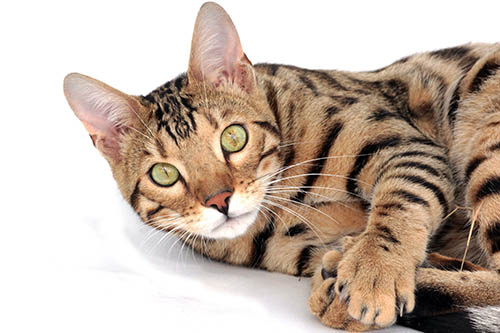
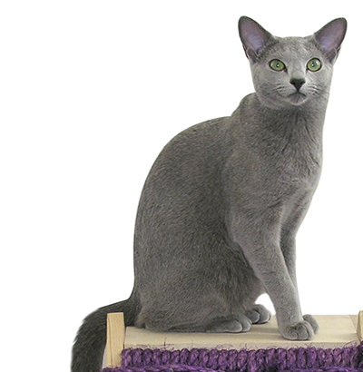
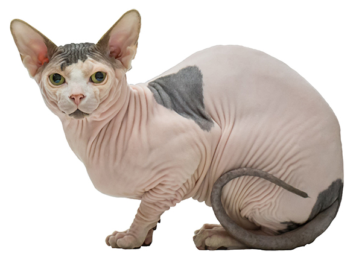

“Cats have it all — admiration, an endless sleep, and company only when they want it.” —Rod McKuen
Cats are great. I'm not saying that dogs are not. I love most pets. MOST. I'm looking at you hermit crab who pinched me in the middle of my hand when I was nine. I will never forget that pain.
Below are my three favorite cats of all time. While I could happily home any cat, these are at the top of my list.
Bengal

Words cannot express my love for the Bengal cat. These cats are so playful and wonderful. They can jump and leap across the room in one fell swoop. These cats love to be active and run around the house all day. Their hair is short and sports the same look as their exotic large cat counterparts. They are quick, agile, and ready for adventure. These cats are incredibly intelligent and act similar to dogs in their personality. Bonus: the Russian Blue is now bred as hypoallergenic. This makes it the perfect pet for me because sadly...I am allergic to cats!
Russian Blue

The Russian Blue is quite possibly my favorite of all cats. It is simply beautiful. Their soft grey fur mixed with the piercing blue-green eyes are phenomenal. This cat requires love, regular grooming, and a cool temperature. The Russian Blue cat is also bred hypoallergenic, making it another ideal pet for me.
Sphynx

If I ever get a Sphynx cat I will name it Smeagle. These cats are adorable little monsters and I love them terribly. While they produce little to no dander and would thus prove the perfect pet for my allergy prone life, they are quite cumbersome to care for. These cats need constant grooming, washing, and care as they have no hair to displace the oil buildup that their bodies produce. Also due to the lack of hair, they need a warm environment. I can already imagine the fantastic outfits I would get for little Smeagle. These cats are quite rare though, and very expensive. The price of purchasing and upkeeping this cat will probably keep it only as a pipe dream and amazing pinterest board...